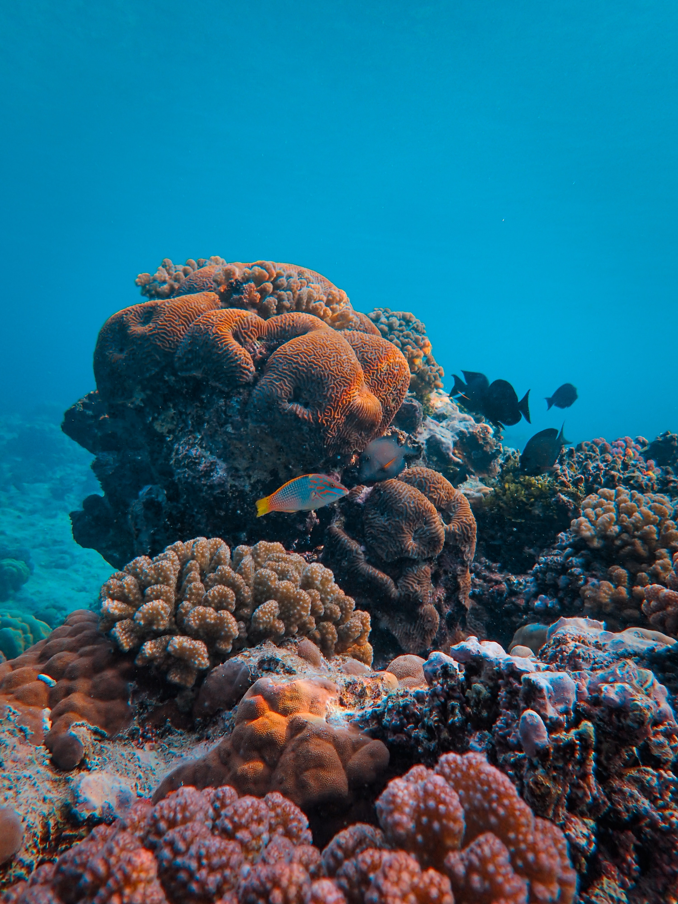
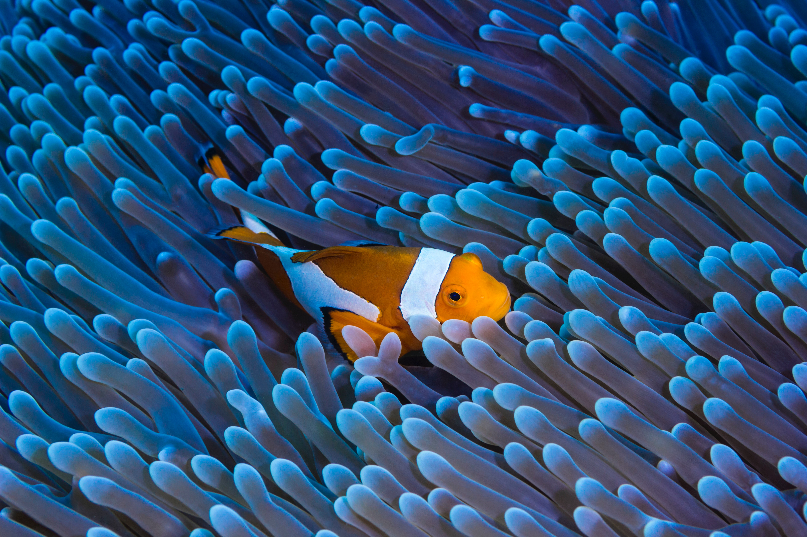

In order to preserve the great barrier reef we need to act now!
Read more about the different threats and challanges the reef is facing down below.
Residing primarily in the Atlantic and Pacific Oceans, the Green Turtle is often seen in the great barrier reef. Up to 60,000 female green turtles congregate on the tiny Raine Island each nesting season. Other species can also be seen in the reef but not comonly due to the fact that all 7 species of marine turtles are listed as endangered.

Whales and dolphins frequent the waters of the Whitsundays and the great barrier reef. Dlphins such as the spinner dolphin may be seen playing in the waves all year but whales are usually only seen in the winter. One exception is the world-wide famous Migaloo, a full-grown white humpback and the only whale in the world to be totally white.
Located off the Queensland coast, the Reef is composed of 3000 individual reef systems, 760 fringe reefs, 600 tropical islands and about 300 coral cays. It is a network of marine sanctuaries of unparalleled ecological importance – a place where beauty transcends business, where nature reigns supreme. How much greater can you get?
Corals are beautiful but unfortunately they are in danger due to overfishing, pollution and coastal development. Donate and be a part of our team to fight to save them.
Donate  


Billions of pounds of plastic can be found in swirling convergences that make up about 40 percent of the world's ocean surfaces. Plastics pollution has a direct and deadly effect on wildlife and thousands of seabirds and sea turtles, seals and other marine mammals are killed each year after ingesting plastic or getting entangled in it.
Overfishing occurs when more fish are caught than the population can reproduce. This causes a huge negative effect on the biodiversity of ocean animals. Over the past 40 years, 39% of marine species have decreased and it has a huge impact on the ocean's ecosystem.

Sunlight is how corals get their oxygen, and due to climate change and deoxygenation 16% of the world's coral reefs have serious and lasting damage. The Great Barrier Reef has also experienced eight mass bleaching events since 1979, triggered by unusually high sea surface temperatures.
Climate projections for the Reef show that the sea level is rising, the ocean is becoming more acidic, intense storms and rainfall will become more frequent, and ocean currents will change. These changes will have consequences for the biodiversity, our economy and coastlines because of the reefs importance.
We need your help to save the reef. Click on the link below and become a part of our team. Every donation makes a different.
Donera
The sea needs you!
Donera- Even the smallest donations makes a different, act now and save lives!
- Contact us on:
- 08-000 0000
- savethebarrierreef@donate.com
- Donate on:
- https://www.wwf.se/stod/bli-fadder/marinfadder/
- It's never too late to make a difference